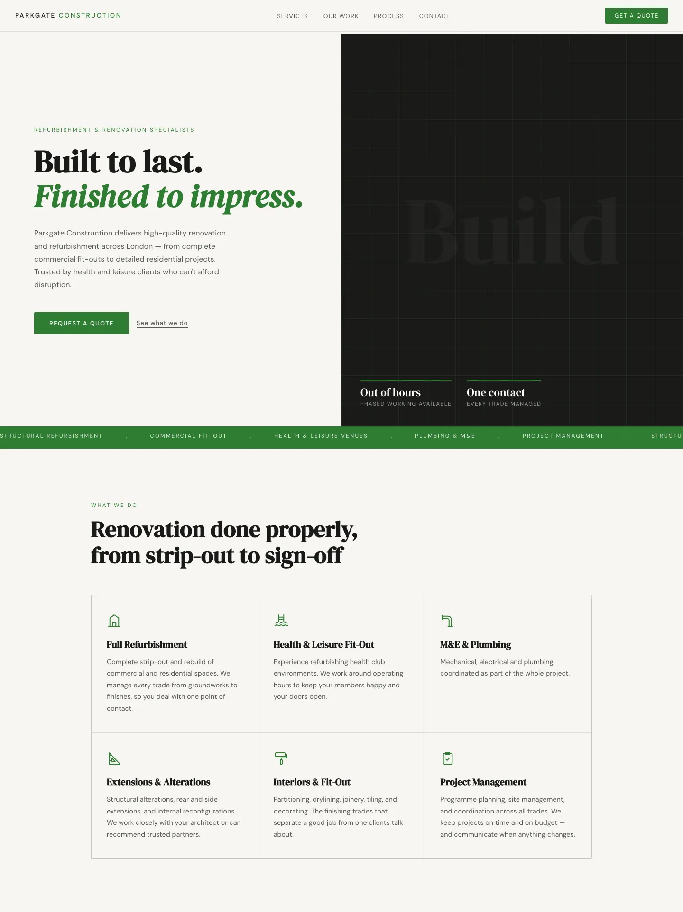
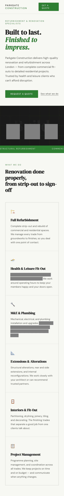

The brief
Parkgate Construction had a domain name and nothing else: no website, no business email, no brand. The owner wanted the company to look established, something he could point a client to with confidence. I took on all of it, from the logo to the last DNS record.
Constraints
No fixed budget and no deadline. The starting kit was one domain login, so every word, colour and email address had to be made from scratch. The owner had little time to spare, so I wrote the copy myself from short conversations. He was new to having a website, so the result had to feel manageable rather than technical. And it was my first client site.
Three decisions and why
-
Foundations before the website.
Before designing a single page, I set up Google Workspace on his domain: his own address, plus hello@ and admin@. Looking established starts with the email a client receives. It also meant suppliers could send receipts straight to the business, which made the bookkeeping far smoother.
-
A green built to last.
I designed the logo in Canva first, in a neutral, trustworthy green: a clean break from the navy and orange of his previous business. I kept design trends out of it. It needed to be understated and minimal, to stand the test of time, and to have a quiet Britishness that suits the man behind it.
-
Type that had to earn its place.
The first draft was set in Garet throughout, and the owner didn't take to it. I rebuilt it with DM Serif Display for headings, classic and steady, and DM Sans for everything else, plain and practical.
What shipped
A logo, business email on Google Workspace, a one-page website deployed on Netlify with the custom domain pointed via DNS, and a minimal invoice template that carries the brand, with green only in the wordmark. The owner was impressed with the site and happy with the wording.
{kind=link}

{kind=link}

What's next
Say less. Seeing his business live on the web was a lot for the owner, so the first revision took things away: the phone number came off in favour of email, placeholder figures became plain statements, and the emoji icons became simple line icons in the brand green. Enquiries from the form now land in the business inbox. Next, I'd set up shared access from day one, so fixes and invoices don't wait on a single laptop.